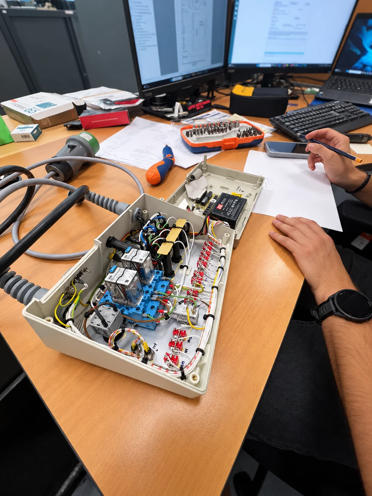
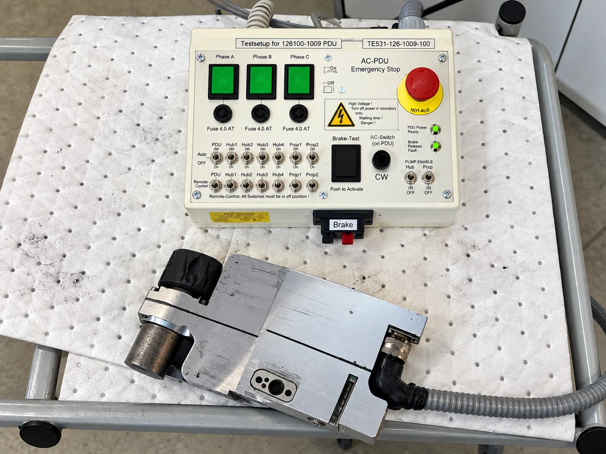
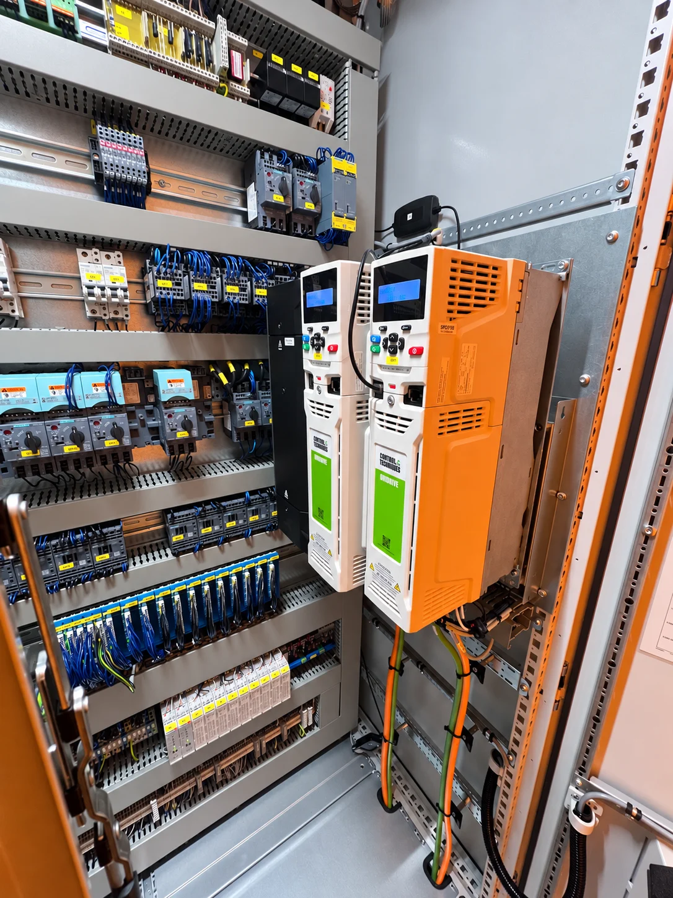
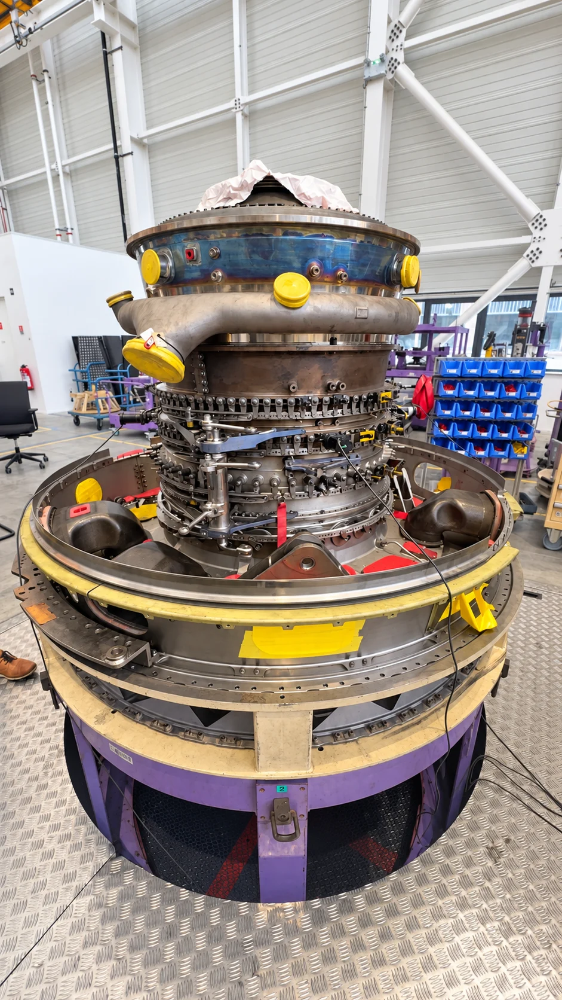

The objective
Develop a prototype for routine checks on an aircraft cargo Power Drive Unit.
Air France Industries / Internship / 2026
A look inside the workshop, the equipment and the electronics behind my aircraft cargo Power Drive Unit testing prototype.
Explore the storyScroll to see each photograph, then its story.

01 / A closer look
An open enclosure reveals relays, connectors and wiring on the workbench.
My internship brought electronics, embedded systems and aircraft equipment into one practical testing project.
Meet the equipment
02 / The equipment behind the project
At the centre of the project: an aircraft cargo Power Drive Unit, shown here alongside its test control panel.
I developed a CAN testing prototype using an Arduino UNO R4 and an LCD interface for routine checks.
Explore the industrial setting
03 / Beyond the prototype
Wiring, protection devices and two drive controllers: a closer look at the electrical cabinet.
A view of the industrial environment surrounding my Air France Industries internship.
Step into the workshop
04 / The bigger picture
An aircraft engine assembly in the workshop: the wider aerospace setting of my internship.
Working on the cargo-equipment testing prototype strengthened my interest in embedded engineering for aerospace.
The project in a few wordsThe project at a glance
Develop a prototype for routine checks on an aircraft cargo Power Drive Unit.
Prototype development during my Air France Industries internship, combining an Arduino UNO R4, CAN communication and an LCD interface.
A practical meeting point between electronics, embedded systems and my interest in aerospace.
I’m looking for a four-month internship in aerospace, electronics or embedded systems from late April to late August 2027.